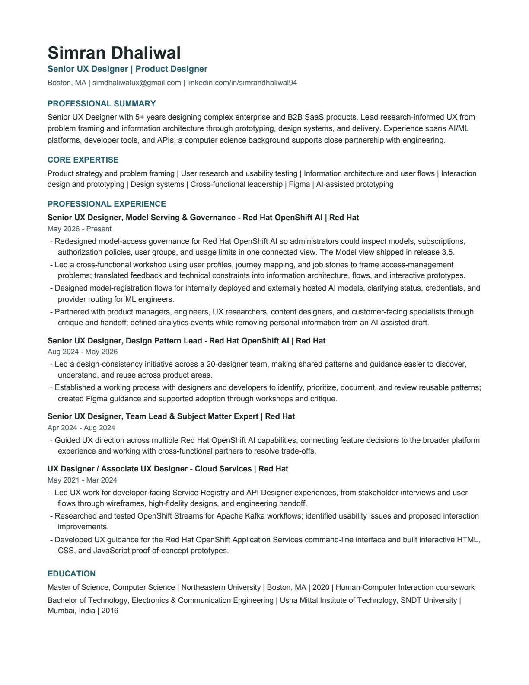

Resume

Read resume as text
Simran Dhaliwal
Senior UX Designer | Product Designer
Boston, MA | simdhaliwalux@gmail.com | linkedin.com/in/simrandhaliwal94
Professional summary
Senior UX Designer with 5+ years designing complex enterprise and B2B SaaS products. Lead research-informed UX from problem framing and information architecture through prototyping, design systems, and delivery. Experience spans AI/ML platforms, developer tools, and APIs; a computer science background supports close partnership with engineering.
Core expertise
Product strategy and problem framing | User research and usability testing | Information architecture and user flows | Interaction design and prototyping | Design systems | Cross-functional leadership | Figma | AI-assisted prototyping
Professional experience
Senior UX Designer, Model Serving & Governance - Red Hat OpenShift AI | Red Hat
May 2026 - Present
- Redesigned model-access governance for Red Hat OpenShift AI so administrators could inspect models, subscriptions, authorization policies, user groups, and usage limits in one connected view. The Model view shipped in release 3.5.
- Led a cross-functional workshop using user profiles, journey mapping, and job stories to frame access-management problems; translated feedback and technical constraints into information architecture, flows, and interactive prototypes.
- Designed model-registration flows for internally deployed and externally hosted AI models, clarifying status, credentials, and provider routing for ML engineers.
- Partnered with product managers, engineers, UX researchers, content designers, and customer-facing specialists through critique and handoff; defined analytics events while removing personal information from an AI-assisted draft.
Senior UX Designer, Design Pattern Lead - Red Hat OpenShift AI | Red Hat
Aug 2024 - May 2026
- Led a design-consistency initiative across a 20-designer team, making shared patterns and guidance easier to discover, understand, and reuse across product areas.
- Established a working process with designers and developers to identify, prioritize, document, and review reusable patterns; created Figma guidance and supported adoption through workshops and critique.
Senior UX Designer, Team Lead & Subject Matter Expert | Red Hat
Apr 2024 - Aug 2024
- Guided UX direction across multiple Red Hat OpenShift AI capabilities, connecting feature decisions to the broader platform experience and working with cross-functional partners to resolve trade-offs.
UX Designer / Associate UX Designer - Cloud Services | Red Hat
May 2021 - Mar 2024
- Led UX work for developer-facing Service Registry and API Designer experiences, from stakeholder interviews and user flows through wireframes, high-fidelity designs, and engineering handoff.
- Researched and tested OpenShift Streams for Apache Kafka workflows; identified usability issues and proposed interaction improvements.
- Developed UX guidance for the Red Hat OpenShift Application Services command-line interface and built interactive HTML, CSS, and JavaScript proof-of-concept prototypes.
Education
Master of Science, Computer Science | Northeastern University | Boston, MA | 2020 | Human-Computer Interaction coursework
Bachelor of Technology, Electronics & Communication Engineering | Usha Mittal Institute of Technology, SNDT University | Mumbai, India | 2016